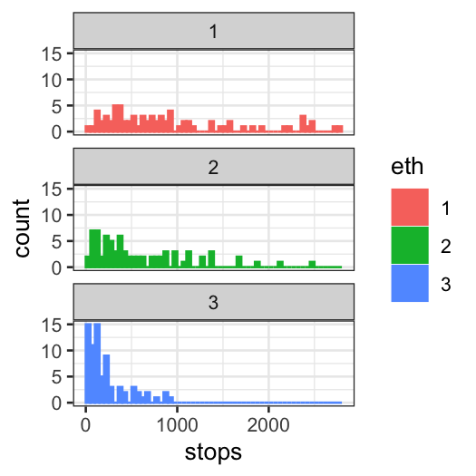

Stat 470/670 Lecture 17: Count responses and Poisson
regression
Julia Fukuyama
Today
- Poisson regression: definition and examples
- Offsets in Poisson regression: adding predictors whose coefficient
is constrained to be equal to 1
- Deviance: the equivalent of residual sum of squares for Poisson
regression
- Residuals: raw residuals are not as useful as they are in a linear
model.
Motivating example: Stop and frisk data
Gelman and Hill have data on police stops in New York City in
1998–1999, during Giuliani’s mayoralty. There have been accusations that
some ethnic groups have been stopped at rates not justified by either
their arrest rate or their location (as measured by precinct.)
The data, with noise added for confidentiality, is at http://www.stat.columbia.edu/~gelman/arm/examples/police/frisk_with_noise.dat
The data gives counts of police stops for all combinations of
eth: Ethnicity of the person stopped, three
possibilities (1 = Black, 2 = Hispanic, 3 = white), and
crime: The type of crime, four possibilities (1 =
violent, 2 = weapons, 3 = property, and 4 = drug)
This gives a total of \(75 \times 3 \times
4 = 900\) rows.
There are two other variables in the data set:
pop: population of the ethnic group within the
precinct, and
past.arrests: the number of arrests of people in that
ethnic group in that precinct for that type of crime in 1997.
The first few rows of this file are a description, so we tell R to
skip these when reading the data.
frisk = read.table("frisk_with_noise.dat", skip = 6, header = TRUE)
nrow(frisk)
## [1] 900
## stops pop past.arrests precinct eth
## Min. : 0 Min. : 321 Min. : 0.0 Min. : 1 Min. :1
## 1st Qu.: 26 1st Qu.: 6844 1st Qu.: 53.0 1st Qu.:19 1st Qu.:1
## Median : 72 Median : 18004 Median : 124.0 Median :38 Median :2
## Mean : 146 Mean : 30105 Mean : 262.8 Mean :38 Mean :2
## 3rd Qu.: 173 3rd Qu.: 46669 3rd Qu.: 287.5 3rd Qu.:57 3rd Qu.:3
## Max. :1755 Max. :184345 Max. :2655.0 Max. :75 Max. :3
## crime
## Min. :1.00
## 1st Qu.:1.75
## Median :2.50
## Mean :2.50
## 3rd Qu.:3.25
## Max. :4.00
frisk = mutate(frisk, eth = as.factor(eth))
For the purposes of this lecture, we’ll ignore the type of crime, and
aggregate the number of stops and past arrests over all four types. If
you’re interested though, you should try a model that includes type of
crime as well and see if anything changes.
Aggregating in this way gives us 225 rows (75 precincts by three
ethnic groups):
frisk.sum = frisk %>%
group_by(precinct, eth) %>%
summarise(stops = sum(stops), past.arrests = sum(past.arrests), pop = mean(pop))
## `summarise()` has grouped output by 'precinct'. You can override using the
## `.groups` argument.
## [1] 225
## precinct eth stops past.arrests pop
## Min. : 1 1:75 Min. : 7.0 Min. : 16 Min. : 321
## 1st Qu.:19 2:75 1st Qu.: 133.0 1st Qu.: 312 1st Qu.: 6844
## Median :38 3:75 Median : 385.0 Median : 571 Median : 18004
## Mean :38 Mean : 584.1 Mean :1051 Mean : 30105
## 3rd Qu.:57 3rd Qu.: 824.0 3rd Qu.:1467 3rd Qu.: 46669
## Max. :75 Max. :2771.0 Max. :5667 Max. :184345
Let’s first draw some pictures.
ggplot(frisk.sum, aes(x = stops, color = eth, fill = eth)) +
geom_histogram(breaks = seq(0, 2800, 50)) + facet_wrap(~ eth, ncol = 1)

Quite clearly, the distributions of stops for the three ethnicities
are different from each other. There are multiple potential explanations
of this phenomenon.
Let’s look at the relationship of stops with past arrests. Because of
skewness, we log both variables.
ggplot(frisk.sum, aes(x = log(past.arrests), y = log(stops), color = eth)) + geom_point()

There’s certainly a relationship. The question is whether the
relationship between the two variables is sufficient to explain the
differences between the stops of the three ethnic groups. You could get
at this just by adding smoother for the three groups:
ggplot(frisk.sum, aes(x = log(past.arrests), y = log(stops), group = eth, color = eth)) +
geom_point(size = 1) + geom_smooth(method = "loess", method.args = list(degree = 1), se = FALSE)
## `geom_smooth()` using formula = 'y ~ x'

Poisson regression
We’ll model this data using (at first) Poisson regression,
another form of generalized linear model.
Poisson regression is used instead of standard linear regression when
the response variable is a count (0, 1, 2, etc.) instead of a real
number.
You could use standard linear regression here (if you put
the numbers into lm in R it will give you results), but
Poisson regression can be better because counts tend to have a Poisson
distribution, and Poisson distributed variables have a fixed
relationship between the mean and the variance.
If \(y \sim \text{Pois}(\lambda)\),
then \(E(y) = \lambda\) and \(\text{Var}(y) =\lambda\). This relationship
is inconsistent with the homoskedasticity assumptions of linear
regression.
In a standard Poisson regression, the response has a Poisson
distribution with the log of the expected value given by a
linear function of the predictors.
In the single-variable case: \[
\log(E[Y \mid x]) = \beta_0 + \beta_1 x
\] and \[
Y \sim \text{Pois}(E[Y \mid x])
\]
If \(x\) is instead a vector of
\(p\) predictors and \(\beta\) is a vector of \(p\) coefficients, we have \[
\log(E[Y \mid x]) = \beta_0 + \beta^T x
\] and \[
Y \sim \text{Pois}(E[Y \mid x])
\]
We’ll start off with a Poission regression model that’s much too
simple, and build up to a more useful one.
The simplest model just treats each number of stops as a realization
of a Poisson random variable.
constant.glm = glm(stops ~ 1, family = poisson, data = frisk.sum)
# install.packages("arm")
library(arm)
# display is like summary with a little bit less of the information you don't use very much
display(constant.glm)
## glm(formula = stops ~ 1, family = poisson, data = frisk.sum)
## coef.est coef.se
## (Intercept) 6.37 0.00
## ---
## n = 225, k = 1
## residual deviance = 123332.5, null deviance = 123332.5 (difference = 0.0)
- The coefficent estimate (on the log scale) is 6.37,
- Transforming to the original scale gives \(e^{6.37} = 584\), that is, the number of
stops for each ethnic group within each precinct is modeled as a random
variable with distribution
\[
\textrm{Poisson}(584).
\]
- The other number to keep track of is the (residual)
deviance. Low deviance is good, as long as you’re not
overfitting.
- Every time you add a degree of freedom, you should expect to reduce
the deviance by 1 if you’re just adding random noise.
Offsets
One way this model is inadequate is that we might expect the number
of stops for an ethnic group in a precinct to be proportional to the
number of arrests for that ethnicity-precinct.
- In a GLM, we can model this using an offset.
- An offset can be thought of as a predictor whose coefficient is
constrained to be equal to 1.
offset.glm = glm(stops ~ 1, family = poisson, offset = log(past.arrests), data = frisk.sum)
display(offset.glm)
## glm(formula = stops ~ 1, family = poisson, data = frisk.sum,
## offset = log(past.arrests))
## coef.est coef.se
## (Intercept) -0.59 0.00
## ---
## n = 225, k = 1
## residual deviance = 46120.3, null deviance = 46120.3 (difference = 0.0)
Since the linear predictor is on the log scale, the offset also has
to be logged. This gives the following model for each precinct/race
combination:
\[
\log[E(\textrm{stops}|\textrm{past arrests})] = -0.59 +
\log(\textrm{past arrests})
\] or (taking the exponential of both sides) \[
E(\textrm{stops}|\textrm{past arrests}) = e^{-0.59 + \log(\textrm{past
arrests})} = 0.56 \times \textrm{past arrests}
\]
To check this, we look at the predicted number of stops for
precinct/race combinations with 10, 100, and 1000 past arrests
respectively:
augment(offset.glm,
newdata = data.frame(past.arrests = c(10, 100, 1000)),
type.predict = "response")
## # A tibble: 3 × 2
## past.arrests .fitted
## <dbl> <dbl>
## 1 10 5.56
## 2 100 55.6
## 3 1000 556.
Our model has a much lower deviance than the constant model, so we’ve
improved the fit by a lot.
Now we want to see what happens if we add ethnic group as a
predictor. Ethnic group is categorical, so we use it as a factor.
eth.glm = glm(stops ~ eth, family = poisson, offset = log(past.arrests), data = frisk.sum)
display(eth.glm)
## glm(formula = stops ~ eth, family = poisson, data = frisk.sum,
## offset = log(past.arrests))
## coef.est coef.se
## (Intercept) -0.59 0.00
## eth2 0.07 0.01
## eth3 -0.16 0.01
## ---
## n = 225, k = 3
## residual deviance = 45437.4, null deviance = 46120.3 (difference = 682.9)
Notes:
- “Past arrests” doesn’t have a coefficient: the model assumes that
expected stops are proportional to past arrests.
- The deviance has dropped substantially again.
- On the log scale, we have additive terms for the offset and for
ethnicity (relative to eth = 1.
- On the original scale, the terms are multiplicative, and we can
combine the offset and ethnicity terms to get a coefficient for each
ethnicity. That is, the model is now
\[
\begin{align*}
E(\textrm{stops} | \textrm{ethnic group, past arrests}) &=
e^{\textrm{intercept} + \textrm{ethnicity coefficient} +
\textrm{log}(\textrm{past arrests})}\\
&= \textrm{multiplier for ethnic group} \times \textrm{past
arrests}
\end{align*}
\]
where the multipliers are
eth.co = coefficients(eth.glm)
multipliers = exp(c(eth.co[1], eth.co[1] + eth.co[2], eth.co[1] + eth.co[3]))
print(multipliers)
## (Intercept) (Intercept) (Intercept)
## 0.5553894 0.5957836 0.4725238
eth.coef = tidy(eth.glm)$estimate
multipliers = exp(c(eth.coef[1],
eth.coef[1] + eth.coef[2],
eth.coef[1] + eth.coef[3]))
multipliers
## [1] 0.5553894 0.5957836 0.4725238
for eth = 1, 2, and 3 respectively. We can check this using
augment():
augment(eth.glm,
newdata = data.frame(past.arrests = 1000, eth = c("1", "2", "3")),
type.predict = "response")
## # A tibble: 3 × 3
## past.arrests eth .fitted
## <dbl> <chr> <dbl>
## 1 1000 1 555.
## 2 1000 2 596.
## 3 1000 3 473.
So far we have shown that eth 1 and 2 were stopped at a
proportionately higher fraction of their arrest rate compared to eth
3.
However, as the data isn’t from a randomized experiment, there may be
confounding — it could be that eth 1 and 2 generally live in precincts
with higher stop rates. (Whether this is in itself evidence of bias is
again, controversial.)
Since this is exploratory work, we won’t attempt to prove
cause-and-effect, but we’ll see whether we can simply explain the
results by including a precinct variable. If we can, then the NYPD might
argue that minorities are only stopped more often because they, perhaps
coincidentally, tend to live in precincts with high stop rates.
precinct.glm = glm(stops ~ eth + factor(precinct), family = poisson, offset = log(past.arrests), data = frisk.sum)
We won’t print out the full results because we now have a coefficient
for each precinct. Let’s just first check the deviance has gone down
significantly:
## [1] 45437.35
## [1] 3427.14
Now look at the first few coefficients (and their standard
errors):
## # A tibble: 77 × 5
## term estimate std.error statistic p.value
## <chr> <dbl> <dbl> <dbl> <dbl>
## 1 (Intercept) -1.38 0.0510 -27.0 7.21e-161
## 2 eth2 0.0102 0.00680 1.50 1.34e- 1
## 3 eth3 -0.419 0.00943 -44.4 0
## 4 factor(precinct)2 -0.149 0.0740 -2.01 4.41e- 2
## 5 factor(precinct)3 0.560 0.0568 9.87 5.87e- 23
## 6 factor(precinct)4 1.21 0.0575 21.0 3.03e- 98
## 7 factor(precinct)5 0.283 0.0568 4.98 6.34e- 7
## 8 factor(precinct)6 1.14 0.0580 19.7 1.72e- 86
## 9 factor(precinct)7 0.218 0.0643 3.39 6.96e- 4
## 10 factor(precinct)8 -0.391 0.0569 -6.87 6.51e- 12
## # ℹ 67 more rows
After controlling for precinct, the differences between the
coefficients become even bigger.
Checking the model: Residual plots
First try: make a residual vs. fitted plot as we have done for linear
models
precinct.glm.df = augment(precinct.glm, type.predict = "response")
ggplot(precinct.glm.df, aes(x = log(.fitted), y = stops - .fitted)) +
geom_point() +
geom_smooth(method = "loess", span = 1, method.args = list(degree = 1))
## `geom_smooth()` using formula = 'y ~ x'
What do we see?
Pearson residuals
- In the Poisson model, we assume that the response has a Poisson
distribution, and so we expect the raw residuals to be
heteroskedastic.
- To see more subtle patterns, we divide the raw residuals by an
estimate of the standard deviation.
- This is the “Pearson residual”: \[
(y_i - \hat y_i) / \sqrt{\hat y_i}
\] Numerator = residual and denominator = estimate of
variance
We can plot pearson residuals instead of raw residuals:
precinct.glm.df = augment(precinct.glm, type.predict = "response", type.residuals = "pearson")
ggplot(precinct.glm.df, aes(x = log(.fitted), y = .resid)) +
geom_point() +
geom_smooth(method = "loess", span = 1, method.args = list(degree = 1))
## `geom_smooth()` using formula = 'y ~ x'
There’s some nonlinearity in the smoother, though the amount is
relatively small. If prediction was the goal, a nonparametric model
might provide an improvement.
Overdispersion
If we care about more than just the conditional expectation, however,
we find a bigger problem. If the Poisson model were correct, the
standardized residuals should be on a similar scale to the standard
normal – that is, the vast majority should be within \(\pm 2\). From the previous graph, that’s
clearly not the case.
We need to measure the overdispersion in the data. We could
do a formal \(\chi^2\) test for
overdispersion, but instead, let’s calculate the typical size of the
squared residuals. (When we “average”, we divide the sum by the residual
degrees of freedom.) If the Poisson model is correct, this should be
close to 1. If it’s much more than 1, we need a better model.
overdispersion = sum(precinct.glm.df$.resid^2) / df.residual(precinct.glm)
overdispersion
## [1] 21.88505
This is much more than 1. In fact, this happens a lot with counts –
the data is often more dispersed than the Poisson model.
How bad is it?
We know there are problems with our model. But are they so bad that
we can’t draw conclusions from it?
Strategy:
- Simulate a fake set of data according to the fitted model, and see
if it closely resembles the actual set.
- Extract the fitted values from the model.
- For each fitted value, simulate a new value using a Poisson
distribution with the fitted value as the mean.
precinct.fits = augment(precinct.glm, type.predict = "response")$.fitted
sim1 = rpois(nrow(frisk.sum), lambda = precinct.fits)
summary(frisk.sum$stops)
## Min. 1st Qu. Median Mean 3rd Qu. Max.
## 7.0 133.0 385.0 584.1 824.0 2771.0
## Min. 1st Qu. Median Mean 3rd Qu. Max.
## 9.0 158.0 379.0 583.6 817.0 2728.0
sim.df = data.frame(frisk.sum, sim1)
Do the marginal distributions match?
library(tidyr)
sim.long = sim.df %>% gather(type, number, c("stops", "sim1"))
ggplot(sim.long, aes(x = number)) + geom_histogram(breaks = seq(0, 2800, 50)) + facet_wrap(~type, ncol = 1)
ggplot(sim.df) +
stat_qq(aes(sample = stops),
distribution = function(p) quantile(sim.df$sim1, probs = p))
Do the distributions of the residuals match?
Strategy:
- Fit the same model to the simulated data.
- Extract the residuals from the model that used the simulated
data.
- Make a QQ plot of the residuals in the model fit on simulated data
vs. the residuals in the model fit on the real data.
- If the model is correct, the QQ plot should be close to a line
through the origin with slope 1.
Real residuals are much farther from the true values than the
simulated residuals.
precinct.sim = glm(sim1 ~ eth + factor(precinct), family = poisson, offset = log(past.arrests), data = sim.df)
resid.df = data.frame(real.resid = augment(precinct.glm, type.predict = "response")$.resid,
sim.resid = augment(precinct.sim, type.predict = "response")$.resid)
ggplot(resid.df) +
stat_qq(aes(sample = sim.resid),
distribution = function(p) quantile(resid.df$real.resid, probs = p)) +
geom_abline(intercept = 0, slope = 1) +
xlab("real residual quantiles") + ylab("simulation residual quantiles")
Fixing overdispersion
- Use the quasipoisson family instead of the Poisson.
- Coefficients will be the same, only thing that changes are standard
errors.
precinct.quasi = glm(stops ~ eth + factor(precinct), family = quasipoisson, offset = log(past.arrests), data = frisk.sum)
tidy(precinct.quasi)
## # A tibble: 77 × 5
## term estimate std.error statistic p.value
## <chr> <dbl> <dbl> <dbl> <dbl>
## 1 (Intercept) -1.38 0.239 -5.78 4.33e- 8
## 2 eth2 0.0102 0.0318 0.320 7.49e- 1
## 3 eth3 -0.419 0.0441 -9.49 5.49e-17
## 4 factor(precinct)2 -0.149 0.346 -0.430 6.68e- 1
## 5 factor(precinct)3 0.560 0.266 2.11 3.66e- 2
## 6 factor(precinct)4 1.21 0.269 4.50 1.38e- 5
## 7 factor(precinct)5 0.283 0.266 1.06 2.89e- 1
## 8 factor(precinct)6 1.14 0.272 4.21 4.35e- 5
## 9 factor(precinct)7 0.218 0.301 0.725 4.70e- 1
## 10 factor(precinct)8 -0.391 0.266 -1.47 1.44e- 1
## # ℹ 67 more rows
precinct.fitted = augment(precinct.glm, type.predict = "response")$.fitted
quasi.fitted = augment(precinct.quasi, type.predict = "response")$.fitted
summary(quasi.fitted - precinct.fitted)
## Min. 1st Qu. Median Mean 3rd Qu. Max.
## 0 0 0 0 0 0
We now back-transform to get intervals for the stop rates by
ethnicity, after adjusting for arrest rates and precinct.
## 2 and 3 are the rows corresponding to the eth = 2 and eth = 3 coefficients
eth.co = tidy(precinct.quasi)[2:3,]
eth.co$ethnicity = c("2", "3")
eth.co.plotting = eth.co %>%
mutate(estimate_rescaled = exp(estimate),
lower = exp(estimate - 2 * std.error),
upper = exp(estimate + 2 * std.error))
ggplot(eth.co.plotting) +
geom_pointrange(aes(x = ethnicity, y = estimate_rescaled, ymin = lower, ymax = upper)) +
geom_abline(intercept = 1, slope = 0, color = "red")+
ylab("Ratio of stop rate relative to Blacks,\nadjusted for past arrests and precinct") +
ggtitle("Approximate 95% confidence intervals\nfor NYPD stop rates of minorities") +
coord_flip()
The confidence interval for comparing to whites doesn’t include 1.
This would be consistent with a hypothesis of bias against minorities,
though we should think very carefully about other confounding variables
before drawing a firm conclusion (e.g. type of crime, which we ignored.)
The statistics cannot give you a definitive answer, but they can
constrain what sorts of answers are consistent with the data.
Other fixes for overdispersion in Poisson models
There are lots of alternative approaches:
- Negative binomial regression is an alternative to the quasipoisson
when the count data is overdispersed.
- Nonparametric approaches like loess and GAM can give you a better
fit for the conditional expectation, at the cost of making inference
much more complicated.
- A multilevel model has appeal here because of the large number of
precincts. It can deal with overdispersion as well as regularize the
estimates for the precincts. These get complicated very quickly
though..
Overall
- We saw Poisson regression and how/why to include offsets in a
Poisson regression model.
- We saw how to compare models using residual deviance.
- We saw why we need to use Pearson residuals instead of raw
residuals.